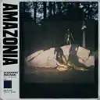

Parallel Vision / Berlin 2063 / Re-release
Amazonia
Alejandro Molinari
feat. Victor Schaeffer
Beyond the human.
Beyond the machine.
01 / The world
Relics from a future that has not happened.
Amazonia explores the archaeology of hyper-futures: a world where nature no longer exists in opposition to technology, but has absorbed it entirely.
In the ruins of a post-human civilization, impossible materials emerge. Metallic organisms, synthetic skin, ancestral DNA and the remnants of proto-materials suggest an evolutionary history that has yet to happen.
Here, humanity has not simply disappeared. It has mutated, merging with machines, animals and artificial intelligence into new forms of consciousness.
Amazonia is an imagined excavation of tomorrow, where the relics of the future reveal the origins of a civilization beyond the human.